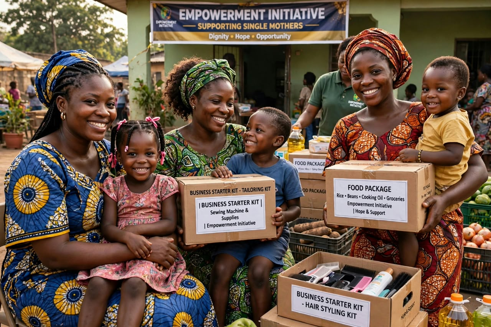

Volunteer
Ask about supporting the initiative as a trainer, mentor, or field volunteer.
People, skills, and partnerships can help strengthen community-led work. Contact the initiative to discuss a way to take part.
Ask about supporting the initiative as a trainer, mentor, or field volunteer.
Organizations interested in collaborating or exploring a community partnership can contact the team.
Share the initiative’s mission and programs with people who may want to connect.
For current giving options, please contact the initiative directly.
Email the initiative